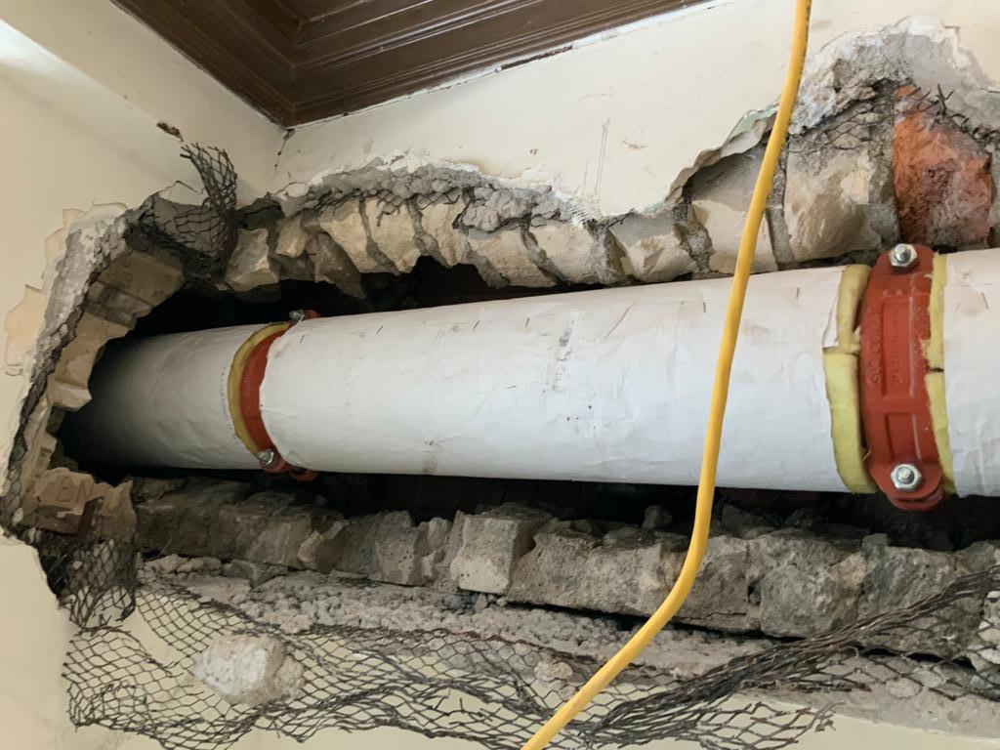
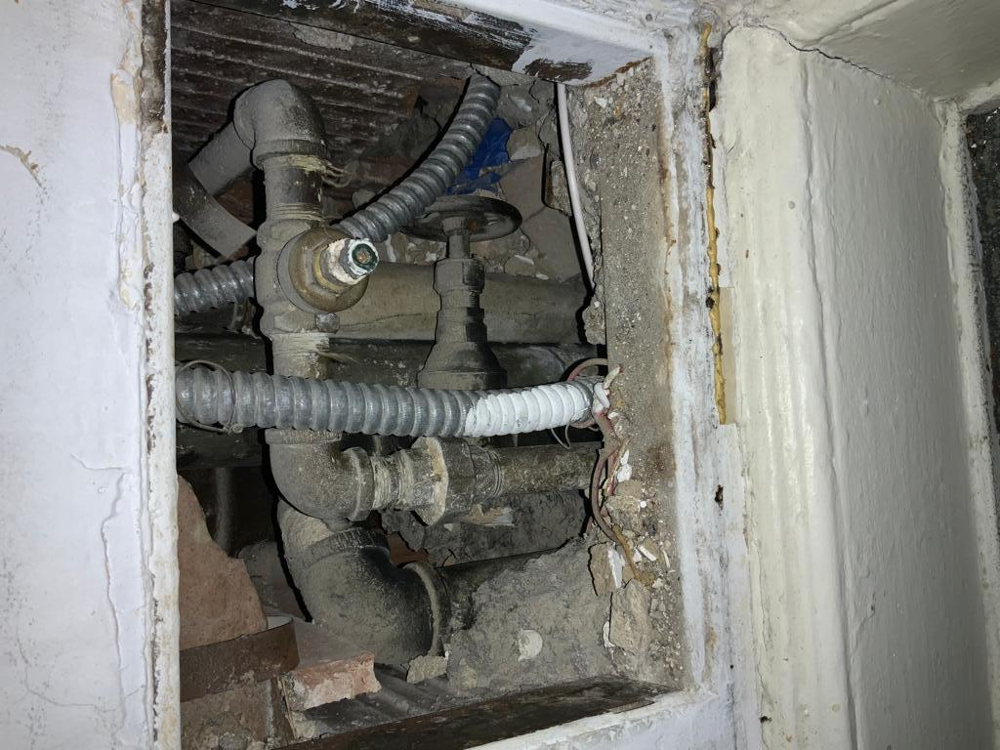

We understand the importance of protecting your home or business from the hazards of Asbestos, Lead and Molds. We offer a wide range of services to help you identify, assess, and safely remove these hazardous materials from your property. Our services includes:
Asbestos
- Asbestos Testing: We provide laboratory testing to identify the presence of asbestos in your building materials.
- Asbestos Inspection: Our certified professionals conduct a thorough inspection of your property to identify asbestos-containing materials and assess the condition of those materials.
- Asbestos Abatement: We use safe and effective methods to remove asbestos-containing materials from your property, in compliance with all federal, state, and local regulations.
- Air Monitoring: We use state-of-the-art equipment to monitor the air during and after the asbestos abatement process to ensure that your property is safe for occupancy.
- Asbestos Disposal: We handle the safe disposal of all asbestos-containing materials in accordance with all applicable regulations.
Lead
- Lead Testing: We provide laboratory testing to identify the presence of lead in your building materials and soil.
- Lead Inspection: Our certified professionals conduct a thorough inspection of your property to identify lead-containing materials and assess the condition of those materials.
- Lead Abatement: We use safe and effective methods to remove lead-containing materials from your property, in compliance with all federal, state, and local regulations.
- Air Monitoring: We use state-of-the-art equipment to monitor the air during and after the lead abatement process to ensure that your property is safe for occupancy.
- Lead Disposal: We handle the safe disposal of all lead-containing materials in accordance with all applicable regulations.
Mold
- Mold Inspection: Our certified professionals conduct a thorough inspection of your property to identify mold and assess the extent of the problem.
- Mold Testing: We provide laboratory testing to confirm the presence of mold and identify the type of mold present.
- Mold Remediation: We use safe and effective methods to remove mold from your property, including the use of HEPA air filtration, negative air pressure, and controlled containment, in compliance with industry standards.
- Lead Disposal: We handle the safe disposal of all lead-containing materials in accordance with all applicable regulations.
- Water Damage Restoration: We also provide water damage restoration services to help prevent mold growth in the first place and repair any damage caused by water leaks.
If you suspect that your property may contain Asbestos, lead and Mold or if you need help with their abatement, please don't hesitate to contact us. We are happy to provide a free estimate for your specific needs and answer any questions you may have. We are committed to providing the highest level of service and customer satisfaction while keeping your property safe from these hazardous materials.